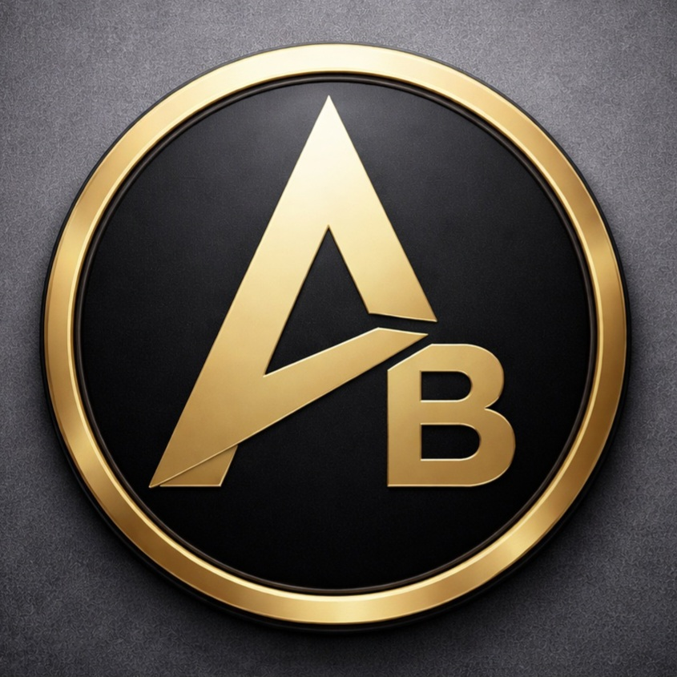
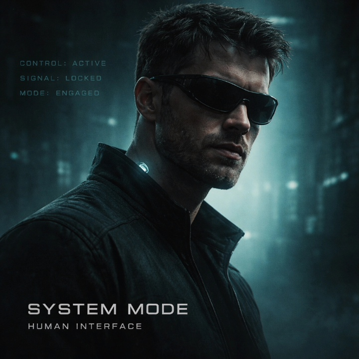

System Mode
A project of AB Music Platform

Official links
Spotify
Instagram
YouTube
Album: Human Interface
Dark synth pop • system-driven electronic storytelling
- Input
- Connected
- Connected (Second Layer)
- Accepted
- Override
- Locked